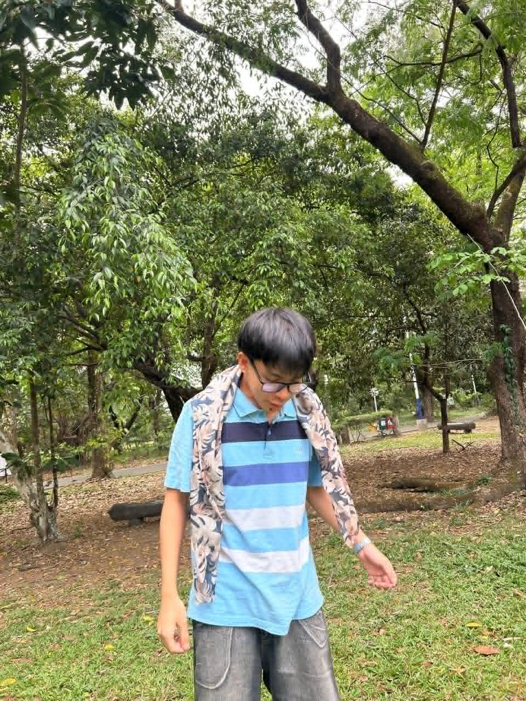

The UP Diliman Sunken Garden, officially named the General Antonio Luna Parade Grounds, is a five-hectare natural basin-shaped depression located on the eastern side of the University of the Philippines Diliman campus in Quezon City. It is a wide, grass-covered open space surrounded by large trees and key campus buildings.
I love this place so much if i want to unwind from stress
